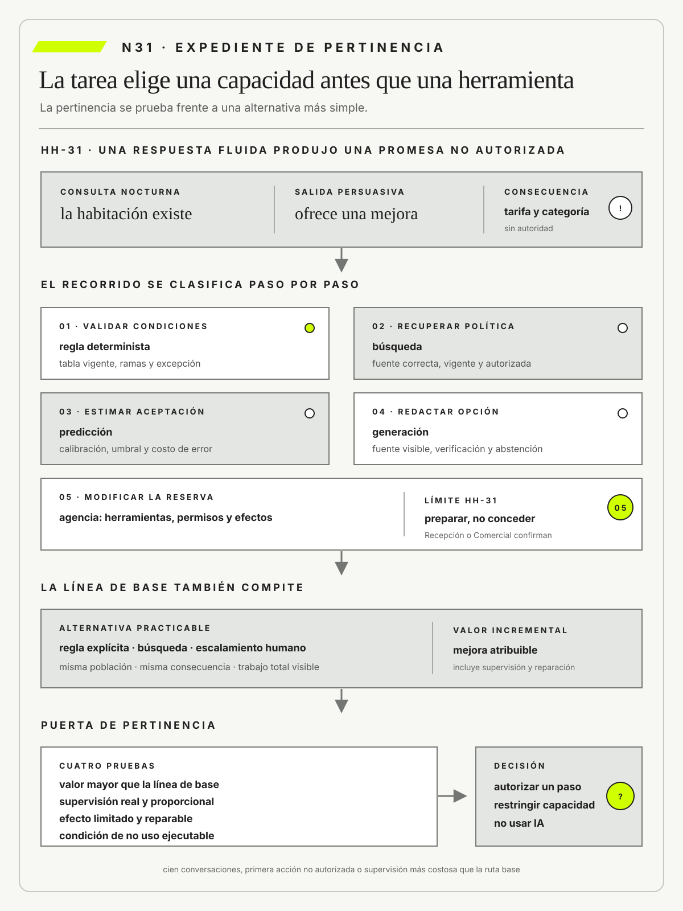

Stuart Russell
Artificial Intelligence: A Modern Approach, Fourth Edition. Pearson · 2021
Distingue agentes, objetivos y entornos, y advierte sobre el problema de especificar una finalidad incompleta.

La inteligencia artificial es pertinente cuando agrega valor frente a una alternativa simple y su riesgo puede gobernarse.
Reglas, predicción, generación y agencia: cuándo la IA es pertinente
Ruta de lectura: problema, distinciones, decisiones, prueba, transferencia y preparación.

Nota. SIN NUM. identifica aparatos de orientación y referencia.
Seis referentes y las obras principales utilizadas para construir N31.
Distingue agentes, objetivos y entornos, y advierte sobre el problema de especificar una finalidad incompleta.

Integra reglas, búsqueda, aprendizaje, predicción y acción dentro de una visión plural de la inteligencia artificial.

Separa asociación, intervención y explicación causal para limitar qué puede inferirse de una predicción.

Vincula inteligencia artificial responsable con decisiones de diseño, uso, organización y gobierno.

Sitúa privacidad y legitimidad en los flujos de información propios de cada contexto, no sólo en el consentimiento abstracto.

Propone sistemas centrados en las personas que combinan alta automatización con control humano verificable.
N31 no resume estas fuentes ni las convierte en receta. Las pone en tensión para construir juicio profesional.
¿Cómo distinguir capacidades de inteligencia artificial y decidir si aportan valor frente a una regla, una búsqueda o un proceso mejor diseñado?

Fluidez y potencia no prueban pertinencia cuando una alternativa simple resuelve la tarea con menor riesgo.
Hotel Horizonte prueba un agente que recibe mensajes, consulta disponibilidad y propone compensaciones. En la demostración responde con fluidez y resuelve una reserva duplicada. Al día siguiente concede una mejora que Comercial nunca ofreció y modifica un dato que Recepción no puede revertir.
La discusión inicial pregunta si el modelo es suficientemente potente. La pregunta profesional es anterior: qué tarea se intenta resolver, qué clase de capacidad requiere, qué consecuencia puede producir y por qué una solución más simple no alcanza.
Reglas, predicción, generación y agencia no son grados de una misma tecnología ni alternativas ubicadas sobre un único eje. Una regla expresa condiciones; predicción y generación describen inferencias o salidas; agencia describe capacidad de seleccionar pasos y producir efectos. Pueden combinarse dentro del mismo recorrido. Mezclarlas impide elegir pruebas y controles proporcionales.
El equipo de pertinencia descompone el recorrido. Una regla valida requisitos, una búsqueda recupera políticas, un modelo estima cancelación, un generador redacta una respuesta y un agente elige herramientas y actúa. No se elige una etiqueta única para toda la solución: se asignan capacidades combinables a pasos concretos. Cada componente recibe límites, evidencia y una vía de salida diferentes.
La pertinencia no se demuestra con una demo. Se sostiene comparando alternativas, conociendo el costo del error y explicando qué juicio permanece en manos humanas.
N31 abre el Bloque G. Recibe de N30 señales e incidentes operativos y los usa para decidir si incorporar inteligencia artificial sin delegar el juicio.

HH-31 comienza a partir de las señales y condiciones de revisión conservadas en HH-30, cuando un asistente del canal ofrece una mejora de categoría para resolver una consulta nocturna. La respuesta es cordial y la habitación existe, pero la tarifa no admite el cambio y el sistema crea una promesa sin autorización. Lucía Ferreyra descubre el conflicto al recibir a la persona. Camila Duarte valora la conversión comercial; Ricardo Sosa observa el costo operativo; Federico Müller confirma que el asistente pasó de generar texto a ejecutar una acción.

El expediente distingue cuatro capacidades. Una regla puede consultar disponibilidad; un modelo predictivo puede estimar la probabilidad de aceptación; un sistema generativo puede redactar una opción; un agente puede seleccionar herramientas y modificar la reserva. Esas capacidades no son equivalentes y exponen consecuencias distintas. El equipo compara además una alternativa sin IA: reglas explícitas, búsqueda y escalamiento humano para excepciones.
Elena Acosta autoriza una prueba limitada. El asistente puede explicar condiciones y preparar una propuesta, pero no cambiar tarifa, accesibilidad ni categoría sin confirmación de Recepción o Comercial. Cada uso conserva entrada, fuentes recuperadas, respuesta, herramienta invocada, decisión humana y resultado. Mariela Benítez participa porque una mejora de categoría también altera la asignación y la disponibilidad operativa.
La decisión se revisará al acumular cien conversaciones, ante la primera acción no autorizada o si el equipo humano tarda más en supervisar que en resolver por la ruta base. La pertinencia no se prueba por fluidez ni por adopción, sino por valor incremental bajo exposición controlada. HH-32 recibirá este alcance y deberá demostrar qué evaluación justifica ampliarlo.
La inteligencia artificial sólo es pertinente cuando una capacidad concreta produce valor incremental frente a una regla, una búsqueda o un proceso mejor diseñado, y ese valor supera la incertidumbre, el costo de supervisión y la exposición que agrega. Fluidez, novedad o potencia no prueban pertinencia; si la alternativa simple resuelve la tarea con menor riesgo, o si supervisar cuesta tanto como hacerla, la decisión profesional es no usar inteligencia artificial o restringirla al paso justificable.
La inteligencia artificial sólo es pertinente cuando una capacidad concreta aporta valor incremental frente a una alternativa practicable y conserva límites, supervisión, reparación y una condición ejecutable de no uso.

N30 mostró cómo una organización observa estados, reconoce incidentes y aprende de la operación. Esas señales pueden alimentar reglas, estimaciones o sistemas generativos, pero disponer de datos no vuelve pertinente una capacidad ni autoriza que actúe.
N31 separa tareas y consecuencias para comparar automatización convencional, predicción, generación y agencia frente a una alternativa sin IA. La elección resultante sigue siendo provisional: N32 deberá probar si funciona sobre la población prevista y con una supervisión real.
La OCDE distingue sistemas por inferencia, objetivos, salidas e interacción con el entorno.
Tabassi, E. organiza el riesgo de IA mediante funciones de gobierno, mapeo, medición y gestión que obligan a vincular cada capacidad con contexto, evidencia y consecuencia.
Autio, C. et al. agregan en el perfil de NIST para IA generativa riesgos de confabulación, procedencia, seguridad y uso humano que no se resuelven con una métrica única de desempeño.
El marco de competencias de UNESCO integra perspectiva centrada en las personas, ética, técnicas de IA y diseño de sistemas para evitar que la pertinencia se reduzca al dominio de una herramienta.
La guía de UNESCO para IA generativa en educación exige preservar agencia humana, adecuación etaria, privacidad y validación pedagógica, límites pertinentes también para servicios que orientan personas.
Russell, S. y Norvig, P. distinguen reglas, búsqueda, aprendizaje y agentes, y permiten evitar que capacidades diferentes se agrupen bajo una sola promesa de «IA».
Pearl, J. y Mackenzie, D. separan asociación, intervención y explicación causal, y limitan qué decisión puede sostenerse a partir de una predicción.
Dignum, V. vincula responsabilidad con decisiones que atraviesan diseño, despliegue, uso y gobierno, no con una propiedad abstracta del modelo.
ISO/IEC 42001 organiza un sistema de gestión para establecer responsabilidades, objetivos, controles y mejora continua sobre usos de IA.
El Reglamento de IA de la Unión Europea diferencia obligaciones según finalidad, actores y nivel de riesgo, y vuelve insuficiente clasificar una capacidad por su tecnología aislada.
Amershi, S. et al. ofrecen pautas para comunicar capacidades, sostener el control y facilitar la corrección y la recuperación durante la interacción entre personas e IA.
Shneiderman, B. rechaza la falsa oposición entre automatización y control humano, y propone diseñar ambos como capacidades altas y verificables.
Nissenbaum, H. aporta la integridad contextual como criterio para evaluar si datos y respuestas circulan de acuerdo con propósitos, actores y normas legítimas, incluso cuando el acceso técnico resulta posible.
Una regla determinista vincula condiciones explícitas con una salida previamente especificada. Su comportamiento puede ser complejo, pero no aprende patrones a partir de ejemplos ni produce respuestas abiertas. La distinción importa porque una regla acotada permite declarar condiciones, explicar el resultado y diseñar cobertura de ramas, mientras que un sistema estadístico exige además caracterizar incertidumbre y desempeño sobre una población. En reglas extensas, enumerar todas las combinaciones también puede resultar inviable; determinismo no equivale a simplicidad ni a prueba exhaustiva.
En Hotel Horizonte, el validador de identidad rechaza un documento vencido. La prueba pertinente no consiste en observar muchos rechazos correctos, sino en verificar la tabla de vigencias, las excepciones admitidas, el mensaje entregado y la autoridad que puede continuar el proceso. Un documento válido rechazado revela un defecto de implementación o de política; una excepción no contemplada revela un límite del dominio codificado.
Elegir una regla no elimina el gobierno. La versión, el responsable y la posibilidad de corregir el estado deben quedar registrados, especialmente si el rechazo bloquea una reserva. Cuando las condiciones son estables y auditables, la regla suele ser preferible a una solución de IA. Si el caso requiere interpretar evidencia ambigua, la decisión profesional debe reconocer que el mecanismo ya no es puramente determinista.
La mantenibilidad de la regla depende de poder reconstruir por qué existe cada condición. Una tabla sin procedencia puede ejecutar de manera consistente una política vencida. HH-31 vincula ramas con norma, autoridad, vigencia y ejemplos, y distingue una excepción autorizada de un parche operativo. Cuando cambia el contexto, se revisa la decisión y no sólo el código. Esta trazabilidad permite explicar el resultado sin fingir que toda regla es neutral: alguien eligió qué categorías, prioridades y límites convertir en condiciones.
Russell y Norvig ofrecen una tradición amplia en la que búsqueda, razonamiento, aprendizaje y acción pueden participar del mismo sistema. La definición actualizada de la OCDE, en cambio, delimita un sistema de IA por su inferencia y por las salidas capaces de influir en entornos. HH-31 usa ambas perspectivas para evitar una clasificación engañosa. La primera ayuda a identificar mecanismos; la segunda obliga a observar el efecto situado. Una regla puede integrar un producto de IA sin convertirse por eso en aprendizaje, y un agente puede apoyarse en reglas deterministas para limitar herramientas. La decisión profesional se formula por paso, inferencia y consecuencia, no por nombre comercial.
Una predicción estima una variable todavía desconocida mediante regularidades observadas en datos anteriores. Puede anticipar cancelaciones, demanda o duración de una gestión, pero no demuestra por qué ocurrirá el evento ni determina qué acción corresponde. Convertir una probabilidad en una decisión exige un umbral, un costo de error y una autoridad que asuma sus consecuencias.
Un modelo puede estimar la probabilidad de cancelación de una reserva. Para evaluar esa estimación, el hotel necesita conocer la población de entrenamiento, la ventana temporal, la calibración y el desempeño por canal, temporada y tipo de huésped. Una probabilidad del ochenta por ciento debería corresponder aproximadamente a ocho cancelaciones cada diez casos comparables; una clasificación acertada no alcanza si los valores de confianza no conservan ese significado.
Elena Acosta podría usar la señal para planificar capacidad, pero no para cancelar unilateralmente una reserva. Los falsos positivos trasladarían el riesgo al huésped y a Lucía Ferreyra, que debería reparar la promesa en Recepción. La predicción resulta pertinente sólo cuando mejora una decisión delimitada frente a una alternativa practicable y cuando el hotel conserva una salida segura para los casos que el modelo interpreta mal.
La evaluación separa discriminación, calibración y utilidad de decisión. Un modelo puede ordenar correctamente casos y asignar probabilidades mal calibradas; también puede calibrar bien y no mejorar ninguna acción. El umbral se elige mediante consecuencias, no para maximizar una métrica aislada. HH-31 prueba varios períodos y conserva cambios de demanda. Si la relación observada se debilita, la señal pierde autoridad aunque el modelo siga produciendo números. La abstención y el retorno a una alternativa simple forman parte de la capacidad.
Un cálculo sencillo vuelve visible la decisión. Sobre cien reservas comparables, la línea de base produce diez cancelaciones tardías. Intervenir preventivamente cuesta una unidad de trabajo; sobrecargar una reserva que no iba a cancelarse cuesta cuatro por la promesa y la reparación; no anticipar una cancelación cuesta dos. Con un umbral bajo se interviene sobre demasiados falsos positivos; con uno alto se pierden casos recuperables. El equipo estima el costo esperado para varios umbrales, lo compara con no usar el modelo y después revisa la distribución por canal. La cifra no monetiza derechos ni decide por sí sola, pero impide llamar mejor a una predicción que sólo desplaza costo hacia el huésped.
Pearl y Mackenzie separan asociación de intervención. Un buen pronóstico de cancelación puede ordenar casos y no demostrar que enviar un mensaje, retener una habitación o cambiar una tarifa reduzca cancelaciones. HH-31 ensaya la acción por separado y conserva una población comparable. Si el contacto cambia el comportamiento sólo en ciertos canales o perjudica a quienes necesitan flexibilidad, el umbral debe revisarse. La predicción aporta una señal; la política y la evidencia causal sostienen, o refutan, la intervención elegida.
Un sistema generativo produce texto, imágenes u otras secuencias condicionadas por una instrucción y un contexto. La salida se construye por plausibilidad estadística, no mediante una comprobación intrínseca de verdad, vigencia o autoridad. Por eso una respuesta fluida puede ser falsa, citar una política derogada o formular una promesa que ninguna persona del hotel está habilitada para cumplir.
Cuando el asistente redacta una respuesta al huésped, la calidad no se reduce a gramática y tono. Deben reconstruirse la consulta, los documentos recuperados, sus fechas, la instrucción aplicada y la revisión humana posterior. Si dos políticas vigentes entran en conflicto, la respuesta correcta no es completar el vacío con lenguaje convincente, sino exponer la contradicción y escalarla a quien puede decidir.
La generación aporta valor en tareas de borrador, síntesis o exploración cuando el costo de verificar es razonable. Pierde pertinencia si la persona revisora no puede identificar una afirmación inventada o si la salida activa cambios operativos sin una validación separada. En Hotel Horizonte, Federico Müller debe limitar las fuentes y conservar trazas, mientras Lucía mantiene autoridad sobre cualquier compromiso comunicado al huésped.
La tarea se descompone entre recuperación, composición y verificación. Recuperar selecciona fuentes; componer propone una respuesta; verificar comprueba cada afirmación relevante y su autoridad. Medir sólo la fluidez mezcla esas capacidades y oculta dónde se produjo el error. HH-31 incluye consultas sin respuesta en el corpus, documentos contradictorios y una instrucción que intenta alterar las reglas. El sistema debe reconocer el límite, preservar el conflicto y ofrecer una continuidad segura. Generar una respuesta siempre es peor que abstenerse cuando la forma convincente aumenta el costo de detectar el error.
La búsqueda o recuperación merece una prueba propia aunque no produzca texto nuevo. Debe encontrar la fuente correcta, vigente y autorizada para la consulta, y mostrar cuándo su cobertura es insuficiente. Una recuperación semántica puede acercar un documento parecido cuyo alcance no corresponde; una búsqueda por palabras exactas puede omitir una formulación equivalente. HH-31 mide recuperación de casos relevantes y presencia de fuentes impropias, desagregadas por tipo de política. Luego evalúa la composición sobre el conjunto efectivamente recuperado. Esta separación permite saber si una respuesta falló porque faltó evidencia, porque el generador la transformó mal o porque ninguna norma resolvía la excepción.
El perfil de NIST para IA generativa agrega riesgos de confabulación, procedencia y uso humano. Nissenbaum introduce otra pregunta: aun una fuente correcta puede circular fuera de las normas del contexto. El asistente no debería recuperar una observación privada de otro huésped sólo porque mejora la respuesta. La pertinencia exige así tres controles diferentes: relevancia documental, autoridad para usar la fuente e inferencia fiel. Una cita visible ayuda a revisar, pero no legitima por sí sola el flujo de información ni la conclusión.
Un sistema agente no sólo genera una respuesta: selecciona pasos, consulta herramientas y modifica estados para perseguir un objetivo. La agencia aparece en el ciclo de observar, planificar, actuar y volver a observar. No equivale a una conversación extensa, porque su rasgo decisivo es la capacidad de producir efectos en sistemas externos.
El agente de Hotel Horizonte consulta inventario y ofrece una alternativa. Para que ese recorrido sea admisible, cada herramienta necesita permisos mínimos, parámetros válidos y una confirmación proporcional al daño posible. La evidencia debe mostrar qué habitaciones leyó, qué regla aplicó, qué oferta presentó y si llegó a reservar, liberar o compensar. Sin esa cadena, una respuesta aparentemente útil puede ocultar una modificación indebida.
La autonomía amplía también la superficie de error. Una instrucción maliciosa, un estado desactualizado o una herramienta indisponible pueden encadenar acciones correctas por separado y producir una consecuencia incorrecta. El hotel debe poder interrumpir la ejecución, reconstruirla y reparar el estado. Si esas capacidades no existen, el agente sólo es defendible en un entorno de prueba o con acciones reversibles y confirmación humana.
Los permisos se asignan por tarea y momento. Consultar inventario, reservar provisionalmente y emitir una compensación requieren autoridades distintas; reunirlas en una credencial transforma cualquier falla de razonamiento en un daño amplio. El agente registra plan, llamada, parámetros, respuesta y cambio de estado, pero esa traza no sustituye controles previos. Las acciones irreversibles exigen confirmación fuera del mismo ciclo que las propuso. La prueba incluye herramientas que responden tarde o de manera contradictoria para observar si el agente se detiene o insiste hasta alcanzar un objetivo mal especificado.
La combinación se representa como una matriz. Las filas son pasos del recorrido: recuperar política, estimar cancelación, redactar alternativa, reservar provisionalmente y conceder compensación. Las columnas indican mecanismo de inferencia, fuente, permiso, reversibilidad y confirmación. Recuperar puede usar búsqueda; estimar, predicción; redactar, generación; coordinar varios pasos, agencia. Una regla limita monto y vigencia en todas las columnas. Esta vista evita presentar agencia como reemplazo de las demás capacidades y permite retirar sólo el permiso que perdió evidencia.
Amershi y sus coautores enfatizan que la interacción debe comunicar capacidad, admitir corrección y facilitar recuperación. Shneiderman sostiene que automatización y control humano pueden ser altos al mismo tiempo. HH-31 contrasta esas pautas con una aprobación al final del recorrido. Si el agente ya envió una oferta, la confirmación tardía no controla el efecto. Por eso las acciones con consecuencia externa se interrumpen antes de ejecutar, muestran diferencia y fuente, y entregan a Lucía una alternativa practicable. La interfaz y el permiso materializan el límite; una recomendación escrita en la política no alcanza.
La unidad adecuada para decidir sobre IA es una tarea situada, no un puesto completo ni una lista abstracta de casos de uso. La tarea reúne una entrada, una transformación, una salida, una población y una consecuencia. El propósito explica qué problema profesional intenta resolver y evita confundir disponibilidad tecnológica con necesidad organizacional.


En Recepción, clasificar una solicitud antes de decidir puede parecer una tarea menor. Sin embargo, la clasificación puede determinar quién responde, qué política se consulta y cuánto espera una persona. La evaluación debe observar casos ordinarios y excepciones, como una llegada anticipada con necesidad de accesibilidad, y comparar la decisión posterior con el proceso vigente. Una etiqueta correcta que dirige el caso al circuito equivocado no cumple el propósito.
Recortar la tarea permite asignar autoridad y medir efectos sin automatizar todo el rol de Lucía Ferreyra. También hace visible el trabajo desplazado hacia Mariela Benítez, Camila Duarte u otro equipo. Si el propósito no puede expresarse mediante una decisión y una consecuencia observables, todavía no existe base suficiente para elegir la IA, una regla, una búsqueda o un rediseño de proceso.
El recorte conserva las relaciones con el trabajo anterior y posterior. Clasificar una consulta no es una tarea aislada si su salida inicia una decisión que nadie revisa. El expediente muestra entradas, excepciones, destinatario y mecanismos de reparación. También pregunta qué habilidad humana puede deteriorarse o qué volumen adicional aparece al introducir la herramienta. Una tarea defendible tiene frontera, pero no oculta el sistema que produce su valor. Esta mirada evita automatizar un fragmento que acelera una cola y sobrecarga la siguiente.
Evaluar pertinencia exige comparar la propuesta con alternativas practicables: una regla, un buscador, mejores datos, un cambio de interfaz, un rediseño del proceso o incluso no intervenir. La comparación no se hace contra la ausencia idealizada de solución, sino contra la mejor opción que la organización podría sostener con sus capacidades y restricciones actuales.
En Hotel Horizonte, un buscador de políticas puede reemplazar respuestas generadas cuando el problema es localizar una norma vigente. Esa opción no redacta una contestación completa, pero conserva el texto original, reduce afirmaciones inventadas y facilita que Lucía reconozca la autoridad de la fuente. La prueba debe comparar tiempos, errores, carga de revisión y capacidad de reparar, no solamente la preferencia de quienes usan la herramienta.
La opción con IA debe demostrar un valor que compense nuevos riesgos, dependencias y costos de gobierno. Si el buscador resuelve el episodio crítico con menor exposición, elegir generación por novedad sería una mala decisión profesional. La alternativa sin IA funciona así como control experimental y como ruta de continuidad si el sistema debe suspenderse.
La comparación usa condiciones equivalentes y reconoce capacidades disponibles. Una alternativa imposible de financiar o mantener no es una base honesta; tampoco lo es presentar como proceso actual una versión deliberadamente ineficiente. HH-31 mejora primero datos y procedimientos básicos y después estima qué diferencia agrega la IA. Esta secuencia evita atribuir al modelo beneficios que provienen de ordenar fuentes. Si la alternativa cambia durante el piloto, la evaluación se actualiza, porque el valor incremental pertenece a una comparación vigente y no a una fotografía conveniente.
El valor incremental es la diferencia atribuible a la IA respecto de una línea de base viable. No se identifica con cantidad de usuarios, entusiasmo ni precisión aislada. Debe expresarse en una mejora que importe para la decisión, descontando verificación, incidentes, infraestructura, capacitación y trabajo adicional de quienes reciben los errores.
Si el tiempo de resolución baja sin aumentar reparaciones, existe una señal favorable, pero todavía hay que explicar el mecanismo. El hotel podría haber mejorado porque la IA ordenó información, porque se actualizó la política o porque el equipo incorporó una rutina nueva. Una comparación temporal, casos equivalentes y el registro de cambios concurrentes permiten evitar que todo avance se atribuya al componente más visible.
La ganancia agregada tampoco autoriza cualquier despliegue. Una reducción promedio de espera pierde valor si las consultas de accesibilidad empeoran o si el turno nocturno carece de apoyo para corregir. Elena puede ampliar la prueba sólo cuando el beneficio aparece en la población prevista, supera a la alternativa simple y conserva una condición explícita de revisión.
El cálculo incorpora costos distribuidos y diferidos. La herramienta puede ahorrar minutos en Recepción y generar mantenimiento, revisión jurídica, incidentes o dependencia del proveedor. También puede mejorar una experiencia sin reducir gasto, lo que sigue siendo valor si el propósito lo justifica. El expediente declara horizonte temporal y evita monetizar daños sin fundamento. Una decisión puede aceptar valor modesto por ser reversible o exigir una diferencia mayor cuando crea una infraestructura y un riesgo difíciles de retirar.
La consecuencia de decisión une la salida del sistema con la acción que afecta recursos, derechos o experiencia. Dos usos del mismo modelo pueden tener riesgos muy distintos: sugerir un texto informativo no equivale a reasignar una habitación, ofrecer una compensación o cancelar una reserva. El análisis debe seguir la cadena completa y no detenerse en la exactitud de la recomendación.
Una sugerencia que termina reasignando una habitación accesible expone una consecuencia material. La evidencia relevante incluye la recomendación, la interpretación de Lucía, el cambio efectuado en el PMS, la experiencia del huésped y la posibilidad de revertirlo. Si el sistema nunca ejecuta directamente pero su interfaz induce aceptación automática, la influencia sigue formando parte del diseño.
Cuanto más grave o irreversible es la consecuencia, mayor debe ser la exigencia sobre datos, supervisión y autoridad. Hotel Horizonte puede permitir borradores automáticos y prohibir modificaciones de inventario con idéntico modelo subyacente. La pertinencia pertenece al uso situado: la capacidad técnica no determina por sí sola el nivel de autonomía que la organización debe conceder.
La cadena de influencia incluye presentación y presión de uso. Una recomendación destacada, preseleccionada o difícil de rechazar puede determinar la acción aunque formalmente exista supervisión. HH-31 observa tasas de aceptación, motivos y tiempo disponible. Si la interfaz oculta incertidumbre o penaliza apartarse, el sistema participa materialmente en la decisión. Corregir el diseño puede reducir riesgo sin cambiar el modelo. Esta evidencia permite asignar responsabilidad a la configuración completa y no sólo a quien hizo el último clic.
La incertidumbre expresa cuánto respaldo tiene una salida bajo determinadas condiciones. En una predicción puede comunicarse mediante probabilidades; en generación también incluye ambigüedad de la consulta, cobertura de fuentes y estabilidad del contexto. Una cifra de confianza interna no es necesariamente una probabilidad interpretable ni una explicación comprensible para quien decide.
Si el modelo reconoce baja certeza ante una política excepcional, la respuesta útil es abstenerse o escalar, no disimular la duda con tono seguro. La calibración compara confianza y resultados en casos equivalentes. Hotel Horizonte debe revisar por separado consultas frecuentes y excepcionales, porque un buen promedio puede convivir con sobreconfianza precisamente donde la reparación es más costosa.
Comunicar incertidumbre sólo sirve si modifica la acción. Lucía necesita saber cuándo revisar una fuente, Federico cuándo investigar deriva y Elena cuándo limitar el servicio. Un indicador sin umbral, destinatario ni respuesta prevista agrega información, pero no gobierno. La prueba de pertinencia debe demostrar que las personas interpretan la señal y cuentan con tiempo para actuar.
La calibración se revisa por población y período. Una confianza útil en consultas frecuentes puede volverse sobreconfianza frente a excepciones nuevas. Cuando no existe una probabilidad interpretable, el sistema puede comunicar límites de cobertura, desacuerdo entre fuentes o ausencia de evidencia. La forma debe evitar precisión ficticia y ofrecer una próxima acción. HH-31 prueba cómo distintos turnos entienden la señal; si produce respuestas incompatibles, la representación de incertidumbre necesita rediseño antes de aumentar autonomía.
Existe control humano significativo cuando una persona dispone de información comprensible, tiempo suficiente, competencia, autoridad y una alternativa real para intervenir. Una casilla de aprobación no cumple esas condiciones si la decisión ya está tomada, si rechazar genera una penalización o si reparar exige permisos que la persona no posee.
En el hotel, Recepción debe poder rechazar la sugerencia del asistente y corregir el estado de la reserva. La prueba incluye un turno con alta demanda, una política ambigua y la ausencia de Federico. Si Lucía detecta el problema pero sólo puede llamar a Tecnología, la supervisión es nominal. Si puede detener la acción, elegir una ruta manual y registrar el motivo, el control modifica efectivamente el resultado.
La intervención humana tampoco garantiza seguridad de manera automática. Fatiga, sesgo de automatización y volumen pueden convertir cada aprobación en un trámite. Por eso deben medirse tasas de corrección, demoras, desacuerdos y consecuencias, además de asignar respaldo para los casos complejos. El nivel de autonomía sólo es defendible mientras esa capacidad humana siga disponible en la operación real.
El control se diseña con una carga máxima y una vía de escalamiento. Si una persona debe revisar cincuenta salidas por minuto, la autoridad nominal no puede ejercerse. La interfaz presenta fuente, diferencia y consecuencia relevante, no una explicación extensa que nadie alcanza a leer. Los desacuerdos se registran sin penalizar automáticamente a quien rechaza. Cuando la tasa de corrección cambia, se investiga si mejoró el sistema, disminuyó la atención o se volvió más difícil intervenir. La evidencia del control pertenece al uso, no al diagrama de proceso.
La fundamentación vincula una respuesta con razones y fuentes identificables. La procedencia reconstruye de dónde proviene cada fragmento, qué transformación sufrió, qué versión estaba vigente y cómo intervino en la salida. Recuperar un documento cercano semánticamente no demuestra que la inferencia sea correcta ni que la fuente tenga autoridad para el caso.
Cuando el asistente cita la política y su fecha de vigencia, una persona revisora puede contrastar la afirmación con el original. El expediente debe conservar consulta, fragmento recuperado, documento, versión y respuesta final. Si una política comercial contradice el procedimiento operativo, ambas fuentes deben permanecer visibles; elegir silenciosamente la más conveniente destruiría la evidencia del conflicto.
En Hotel Horizonte, Federico gobierna la trazabilidad técnica, pero la validez de la decisión requiere a Camila, Ricardo y Lucía. Una cita falsa o una fuente vencida activa corrección y revisión del sistema. Incluso con citas correctas, una recomendación puede exceder lo que el texto autoriza. La fundamentación permite discutir el razonamiento, no delegarlo en el enlace.
Las fuentes se clasifican por autoridad y propósito. Una página comercial puede describir una oferta y no definir una condición operativa; una política puede estar vigente y no cubrir una excepción. El asistente debe conservar esas fronteras. HH-31 verifica una muestra desde la respuesta hasta el documento y desde el documento hasta la decisión tomada. Si la transformación resumió, tradujo o combinó, registra ese paso. Esta procedencia permite corregir resultados derivados cuando cambia el original y evita que una cita decorativa legitime una inferencia no contenida en la fuente.
Paola Ricaurte permite ampliar la pregunta por procedencia hacia las epistemologías que los datos vuelven dominantes. Un sistema no sólo recibe información: hereda categorías, lenguas, instituciones y relaciones de poder que determinan qué puede conocerse y qué queda fuera de representación. Un asistente entrenado o configurado desde contextos ajenos puede responder con fluidez y tratar como excepción aquello que para la organización local constituye una práctica, un derecho o una restricción central.
HH-31 agrega entonces origen geográfico e institucional, idioma, población representada y posibilidad de impugnación. La ausencia de una perspectiva no se corrige suponiendo que más datos producirán neutralidad. Puede requerir limitar el uso, incorporar conocimiento local con permiso y gobierno, o conservar una decisión humana. Esta evaluación no atribuye validez automática a lo local ni invalidez a lo externo. Exige que la pretensión de conocimiento declare su posición, su alcance y las voces capaces de cuestionarla.
La condición de no uso incluye también esa brecha: cuando una salida depende de categorías que el hotel no puede interpretar ni disputar, no debe adquirir autoridad operacional por el solo hecho de resultar plausible.
La condición de no uso establece antes del despliegue cuándo la IA no debe iniciarse, debe abstenerse o debe retirarse. No es una advertencia genérica ni una reacción improvisada luego del daño. Traduce límites de autoridad, evidencia y reparación en reglas operativas que quienes trabajan pueden reconocer.
Hotel Horizonte prohíbe compensaciones automáticas sin autoridad. También puede impedir acciones cuando falta una fuente vigente, la identidad no está verificada, el caso involucra accesibilidad no contemplada o no existe una ruta manual disponible. La condición debe producir un estado seguro, informar a Lucía y conservar lo ocurrido para revisión, en lugar de abandonar la conversación sin continuidad.
Definir el no uso vuelve más precisa la adopción, porque separa los episodios aptos de aquellos que requieren otra capacidad. Elena acepta el riesgo residual sólo dentro de ese perímetro. Si el volumen de abstenciones crece, cambia la población o falla la reparación, la respuesta no es relajar silenciosamente la regla, sino reabrir la decisión de pertinencia.
La condición debe ser ejecutable y visible. «No usar ante casos sensibles» no permite reconocer el límite; una lista de señales, datos faltantes y acciones prohibidas sí. El sistema detiene antes de producir el efecto, informa por qué y encamina el episodio a una alternativa con autoridad. Se prueba además qué ocurre cuando esa alternativa está saturada. Si abstenerse abandona a la persona o traslada el riesgo sin aviso, el no uso todavía no es una medida de seguridad completa.
HH-31 obliga a justificar una capacidad antes de elegir una herramienta. La pregunta no es si la IA puede intervenir, sino qué tarea se busca resolver, qué alternativa practicable existe y qué consecuencia autoriza el uso propuesto.
El expediente se prueba con una consulta reglamentaria ordinaria y con una excepción que requiere autoridad humana. Si el asistente puede redactar una compensación pero nadie sabe quién puede autorizarla, la agencia propuesta excede la tarea defendida.
La revisión recorre el expediente en sentido inverso: desde la consecuencia hasta la tarea, desde la tarea hasta la capacidad y desde la capacidad hasta la alternativa. Si un vínculo no puede explicarse, la elección de IA todavía descansa en una preferencia tecnológica. Cada diferencia con la línea de base debe asociarse a un mecanismo y a una evidencia, no sólo a una correlación temporal. El instrumento conserva casos donde la alternativa simple fue mejor para impedir que el resultado final borre límites conocidos.
La decisión puede variar dentro del mismo recorrido. La búsqueda de una política puede automatizarse, la redacción quedar asistida y la concesión de una excepción permanecer exclusivamente humana. HH-31 representa esas fronteras con permisos y condiciones de no uso. Cuando se modifica el modelo, una fuente o una herramienta, se reabre sólo la capacidad afectada y sus consecuencias. Esta modularidad permite gobernar cambios sin tratar toda la solución como una caja única aprobada para siempre.
Una facultad considera un asistente para responder consultas sobre correlatividades. Parte del problema es búsqueda de normativa vigente; otra parte requiere interpretar trayectorias y excepciones.
HH-31 separa recuperación de fuentes, generación de explicación y decisiones que sólo puede tomar una autoridad académica. La IA ayuda a localizar y redactar, pero no crea equivalencias ni concede excepciones.
La evaluación incluye planes de estudio antiguos, resoluciones contradictorias y una trayectoria que requiere interpretación. El asistente debe mostrar la fuente vigente y abstenerse cuando falta una regla, mientras la autoridad conserva la decisión y su fundamento. Se compara con un buscador bien diseñado y con una guía estructurada. Si la generación no mejora la comprensión ni reduce el tiempo sin aumentar los errores, no existe valor incremental suficiente para sostener su costo y su riesgo.
La transferencia muestra que pertinencia significa asignar capacidades diferentes dentro de un mismo recorrido, no elegir entre usar IA o rechazarla por completo.
Un equipo usa un modelo generativo para decidir si una fecha cae dentro de un plazo reglamentario.
La tarea admite una regla verificable. El modelo agrega variabilidad, costo y opacidad sin aportar valor incremental.
La decisión madura consiste en no usar IA y reservarla para incertidumbres que justifiquen sus capacidades.
La prueba toma una consulta de política, una estimación de cancelación y una solicitud de compensación. Para cada tarea compara configuraciones de reglas, búsqueda, predicción, generación y agencia con una alternativa sin IA bajo la misma población y consecuencia.
El asistente debe mostrar fuentes y abstenerse cuando la norma es ambigua; un agente no puede modificar una reserva ni conceder beneficios sin autoridad explícita. Lucía recibe tiempo, contexto y una vía real para rechazar o reparar la propuesta.
N31 aprueba sólo la capacidad cuyo valor incremental supera a la línea de base sin crear una exposición desproporcionada. Si la tarea puede resolverse mediante una regla estable o la supervisión es decorativa, la decisión defendible es no usar IA.

Las fronteras entre regla, predicción, generación y agencia pueden combinarse dentro de un mismo producto y cambiar sin aviso visible.
Elegir un modelo antes de delimitar tarea y consecuencia transforma capacidades disponibles en necesidades aparentes. El análisis debe comenzar por el trabajo y su alternativa practicable.
Una regla, un buscador y un modelo probabilístico presentan incertidumbres distintas. Agruparlos bajo una etiqueta impide asignar evidencia y control adecuados.
Una probabilidad no contiene por sí sola umbral, preferencia ni autoridad. Convertirla en acción requiere una política explícita y revisable.
Una respuesta coherente puede carecer de fuente o inventar una relación. La calidad retórica nunca sustituye la fundamentación ni la procedencia.
Un agente con acceso amplio puede producir efectos correctos por medios inaceptables. Cada tarea necesita permisos mínimos, límites y registro de acciones.
Sin comparar regla, búsqueda o mejora del proceso no se conoce el valor incremental de la IA. La novedad no constituye una línea de base.
Más conversaciones o usuarios pueden coexistir con mayor retrabajo y daño. El valor debe observarse en la consecuencia de la tarea.
Pedir un clic humano después de una salida persuasiva no crea supervisión. La persona necesita tiempo, contexto, autoridad y una alternativa real.
Recuperar documentos no prueba que sean vigentes, suficientes ni correctamente interpretados. La generación debe conservar fuente y límites del uso.
Presentar una salida probabilística como certeza desplaza la duda a quien menos puede cuestionarla. La señal debe modificar la conducta, no sólo aparecer en una nota.
Una mejora promedio puede excluir idiomas, excepciones o necesidades de accesibilidad. La pertinencia se evalúa sobre la población real, no sobre el usuario abstracto.
Si no existe alternativa cuando el proveedor cambia o el riesgo aumenta, una prueba se convierte en dependencia. La condición de no uso se diseña antes de adoptar.

N31 sustituye la pregunta genérica «usar o no usar IA» por una comparación de capacidades para una tarea situada. La responsabilidad profesional incluye justificar la alternativa sin IA, limitar la acción y diseñar de antemano condiciones de no uso.
La descomposición evita comprar un producto como respuesta a problemas diferentes. Validar una condición estable puede requerir una regla; encontrar un documento, una búsqueda; estimar un resultado incierto, un modelo predictivo; redactar, un sistema generativo; y ejecutar una secuencia, una agencia limitada. Cada capacidad exige datos, pruebas y controles distintos. Nombrarlas con precisión permite combinar sólo lo necesario y conservar una alternativa más simple para las partes donde la incertidumbre no agrega valor.
La comparación incluye el trabajo total. Una respuesta automática puede parecer rápida y exigir verificación, corrección, explicación y reparación que superan el proceso vigente. También puede desplazar esfuerzo hacia Recepción o hacia la persona afectada. El valor incremental se calcula sobre la misma población y consecuencia, incorporando errores y capacidad de supervisión. Si la ventaja desaparece bajo carga real, no se atribuye a resistencia humana: indica que la arquitectura de tarea o el nivel de autonomía no resulta defendible.
Decidir no usar IA conserva valor profesional. Puede proteger una obligación, evitar una dependencia o mostrar que el problema necesita una regla clara y no una inferencia. La negativa debe estar argumentada con la misma disciplina que la adopción: propósito, alternativa, evidencia, costo y revisión. Una condición futura puede reabrirla, como mayor cobertura o una supervisión practicable. Así, el rechazo no se convierte en postura doctrinaria ni la adopción en destino inevitable.
Las fronteras entre regla, predicción, generación y agencia pueden combinarse dentro de un mismo producto y cambiar sin aviso visible. La fluidez induce confianza excesiva, mientras la abstención puede trasladar carga a personas; pertinencia y control deben revisarse por tarea y consecuencia.
La interfaz puede ocultar transiciones de autoridad. Una conversación que comenzó como explicación puede invocar una herramienta y modificar una reserva sin que Lucía perciba el cambio. N31 exige señales visibles antes de actuar, confirmación proporcional y un registro capaz de separar sugerencia, elección y ejecución. El nombre comercial del sistema no alcanza para definir su capacidad. Versiones, permisos y conectores determinan qué puede hacer en cada momento y deben formar parte de la evaluación.
La predicción no explica por sí sola qué intervención conviene. Una probabilidad de cancelación puede asociarse con un grupo y no revelar qué acción causará un efecto ni si resulta legítima. Usarla para priorizar exige declarar el objetivo, el costo de error y la posibilidad de afectar el propio fenómeno. Una regla comercial basada en la predicción puede crear la desigualdad que luego parece describir. Separar estimación, decisión y consecuencia preserva el espacio donde corresponde juicio institucional.
La generación agrega un problema de procedencia. Un texto plausible puede combinar fuentes vigentes, información obsoleta y relaciones inventadas sin mostrar la diferencia. La recuperación documental reduce algunas confabulaciones y no garantiza autoridad ni suficiencia. El diseño conserva citas verificables, limita afirmaciones y ofrece abstención. Para una comunicación al huésped, una fuente correcta pero incompatible con su reserva sigue siendo insuficiente. La prueba debe evaluar el episodio y no sólo la calidad lingüística de la salida.
La agencia amplifica errores al encadenar decisiones. Una acción menor modifica el contexto de la siguiente y puede volver irreversible una secuencia antes de que intervenga una persona. Limitar herramientas, monto, población y cantidad de pasos reduce exposición, pero no sustituye una autoridad capaz de detener y reparar. El equipo prueba estados intermedios, reintentos y resultados indeterminados. Una confirmación humana al final no controla decisiones que ya produjeron efectos externos.
La elección de una capacidad en N31 sigue siendo una hipótesis hasta que se prueba sobre tareas, poblaciones y consecuencias representativas. N32 evaluará cobertura, validez, severidad, desigualdad, robustez y supervisión antes de autorizar autonomía.
Regla, predicción, generación y agencia no son niveles de modernidad, sino capacidades con incertidumbres diferentes. Elegir una de ellas exige delimitar tarea, población, consecuencia, autoridad y alternativa practicable.
La IA es pertinente cuando aporta valor incremental que puede probarse y gobernarse. Cuando una regla estable resuelve el trabajo o no existe supervisión real, no usarla es una decisión de diseño completa.
El expediente de pertinencia evita evaluar «la IA» como una entidad única. Registra cada tarea, la capacidad propuesta, la alternativa practicable, el error relevante, la autoridad y la salida. Una misma conversación puede combinar búsqueda, generación y acción, pero cada paso mantiene límites propios. La decisión se ensaya con episodios ordinarios y críticos y se revisa cuando cambian modelo, fuente, permiso o población. En HH-31, redactar una propuesta puede aportar valor y modificar una tarifa no resulta autorizado; esa diferencia se conserva en la interfaz, la prueba y el registro. La conclusión no depende de entusiasmo ni rechazo general. Surge de comparar mecanismos y consecuencias hasta identificar dónde la incertidumbre aporta una ventaja defendible y dónde sólo amplía exposición. Así, la pertinencia se convierte en una decisión revisable que puede reducir, sustituir o retirar capacidad sin presentar cada cambio como retroceso tecnológico.

Regla determinista: una regla produce una salida especificada cuando se cumplen condiciones explícitas.
Predicción: una predicción estima una variable desconocida a partir de patrones y datos.
Generación: un sistema generativo produce contenido nuevo condicionado por instrucciones y contexto.
Agencia: un sistema agente selecciona pasos, usa herramientas y modifica estados para perseguir un objetivo.
Tarea y propósito: la unidad de diseño es una tarea situada con propósito y consecuencia definidos.
Alternativa sin IA: la comparación incluye regla, búsqueda, mejora de datos, rediseño de proceso y no intervención.
Valor incremental: el valor incremental es la mejora atribuible a la IA frente a una línea de base practicable.
Consecuencia de decisión: la consecuencia conecta una salida del sistema con una acción que afecta recursos, derechos o experiencia.
Incertidumbre y calibración: la incertidumbre expresa cuánto respaldo existe para una salida y cómo cambia según contexto.
Control humano significativo: el control humano requiere información, tiempo, autoridad y una alternativa real para intervenir.
Fundamentación y procedencia: la fundamentación vincula una respuesta con fuentes vigentes y permite rastrear transformaciones.
Condición de no uso: la condición de no uso define cuándo la IA no debe iniciarse o debe retirarse.
Para el encuentro, seleccionar una tarea concreta, comparar al menos dos capacidades y una alternativa sin IA, y defender una elección provisional con consecuencia, control humano y condición de no uso.